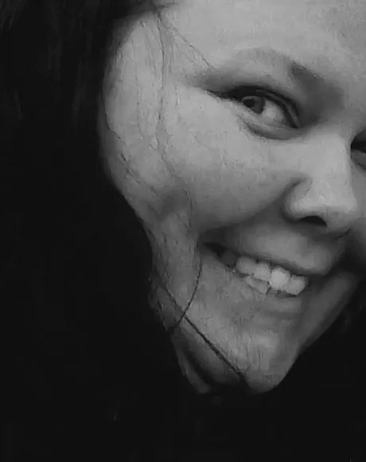
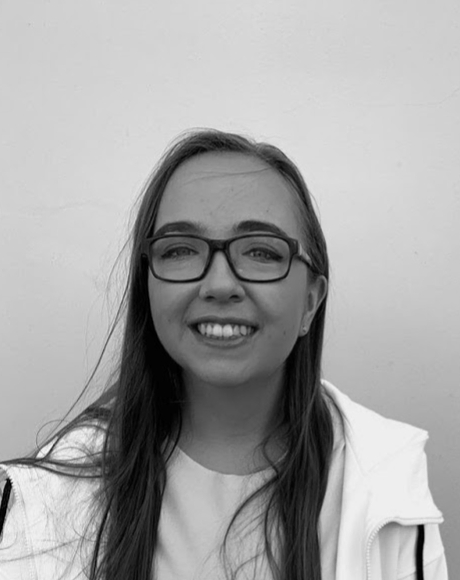
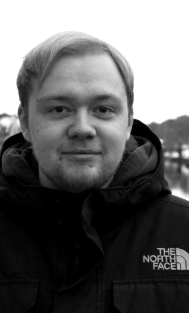
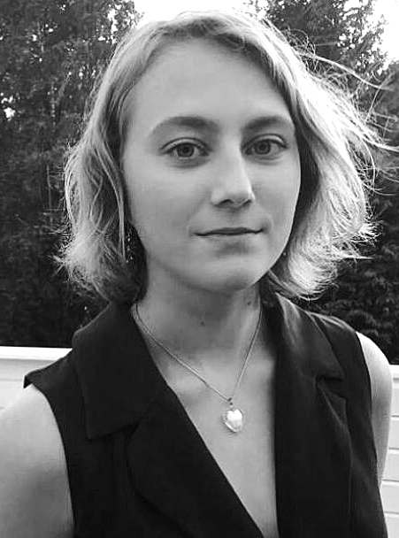
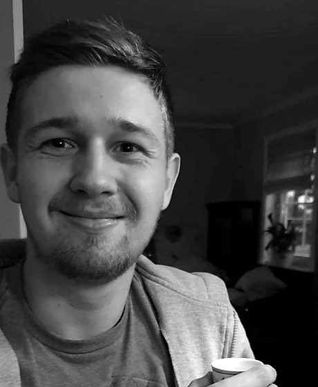

Vegard Egeberg
Leder
Vegard Egeberg studerer filmvitenskap ved NTNU og ble medlem i Trondheim Filmklubb høsten 2017. Han foretrekker gjerne stil over substans, og har en forkjærlighet for svarte komedier og kammerspill.
Favorittregissører: Ruben Östlund, Edgar Wright, Wes Andersson, Jean-Pierre og Luc Dardenne
Favorittfilmer: Y tu mamá también, Sånger från andra våningen, Lost in Translation, The Darjeeling Limited

Renate Kroken
Styremedlem
Utdannet filmviter fra NTNU, tilbringer dagene skinnelangs som overkonduktør i jernbanen, når hun ikke arrangerer events for internasjonale folk i Trondheim som ambassadør i InterNations. TV-serie-maraton-titter, hun er fast inventar på Kosmorama og Ramaskrik, med en forkjærlighet for å bli skremt av film selv om hun blir fryktelig redd.
Favorittregissører: David Fincher og Stanley Kubrick.
Favorittfilmer: Fight Club, What We Do In the Shadows, Tante Pose, Diary of a Mad Black Woman- for å nevne noen.
Katarzyna Gasiorek
Økonomiansvarlig
Katarzyna har en mastergrad i internasjonalt næringsliv. Hun interesser seg i skandinavisk film og liker å reise.
Favorittregissører: Lukas Moodysson, Susanne Bier, Thomas Vinterberg, Jan Machulski, Pedro Almodovar
Favorittfilmer: 101 Reykjavik, Elsker dig for evigt
Leni Terese Hansen
Styremedlem
Leni er i gang med å ta en Mastergrad i Engelsk litteratur og kultur. Hun har en forkjærlighet for filmer med god karakterskildring, spektakulær kinematografi og magisk musikk. Filmer som er svært samfunnskritiske eller dypt melankolske er også av interesse. Ellers er hun også en entusiastisk tv-(maraton)titter, leser av spekulativ litteratur og selv-erklært nerd.
Favorittregissører: Hayao Miyazaki
Favorittfilmer: Howl’s Moving Castle, Princess Mononoke, Battle Royale, Chungking Express, House of Flying Daggers og Ringenes Herre trilogien.
Ingrid Karoline Karlsen
Styremedlem
Ingrid Karoline Karlsen Ingrid er førsteårsstudent som tar bachelorgrad i Filmvitenskap på NTNU. Hun lar seg stadig fortrylle over variert historiefortelling i filmmediet. Hun har en forkjærlighet for komplekse karakterer, humor, absurditet og animasjon, men er ellers en altetende entusiast som sjeldent takker nei til filmkvelder.
Favorittregissører: Stanley Kubrick, Francis Ford Coppola, Ingmar Bergman, Hayao Miyazaki
Favorittfilmer: Flåklypa Grand Prix, Mullholland Drive, 12 Angry Men, Apocalypse Now, November
Morten Helland
Styremedlem
Freelance filmskaper som jobber mest med lyd, men liker også å skrive manus. Han prøver å se minst en film hver dag. Flere hvis han kan. Skriver musikk nesten hver dag (Når han ikke ser film). Og han har tydeligvis også en tendens til å se for mange filmer på festivaler etter å ha fått noen stygge brev fra kroppen og øynene sine uken etter.
Favorittregissører: Park Chan-Wook, Nakashima Tetsuya, Edgar Wright, Hélène Cattet & Bruno Forzani
Favorittfilmer: Oldboy (2003 såklart), Confessions, Me and Earl and the Dying Girl, Synecdoche New York, Let the Corpses Tan
Mia Brathagen Lie
Styremedlem
Mia B. Lie 22 år fra Bærum. Har en bachelor i psykologi fra Lillehammer og studerer nå master i psykologi ved NTNU. Ser film i hvilken som helst sjanger så lenge den er bra, men tendens til å like dystre, rolige og visuelt slående filmer.
Favorittregissører: Hayao Miyazaki, Wes Anderson, Denis Villeneuve, Christopher Nolan
Favorittfilmer: Spirited away, Requiem for a dream og Lost in translation.
Pål Manshaus
Styremedlem
Studerer Informatikk ved NTNU, men har alltid hatt en brennende interesse for film. Han har ingen særegne preferanser, men elsker hvordan film kan få deg til et helt annet sted, og hvordan det generelt kan knytte sammen folk
Favorittregissører: Shane Meadows, Richard Linklater, Joachim Trier, David Lynch, Wes Anderson
Favorittfilmer: Cinema paradiso, Riget, everybody wants some, This is England
Robert Brembo Ottem
Styremedlem
Filmnerd og statsviter. Har en spesiell interesse for science-fiction og øst-europeiske film - kombinasjon av de to er ideell. Liker filmer som gir innsikt i en tidligere ukjent verden, eller gir et unikt perspektiv på en dagligdags situasjon.
Favorittregissører: Stanley Kubrick, Ridley Scott, Denis Villeneuve, Steve McQueen
Favorittfilmer: Under the Skin, 2001: A Space Odyssey, Shame, You Where Never Really There, De nærmeste
Være med i styret?
Vi tar opp nye styremedlemmer med jevne mellomrom. Utlysninger legges ut her og på Facebook. Arbeidsoppgavene inkluderer blant annet:
- Møtevirksomhet en gang i uka
- Utvalg av film og booking
- Filmvisninger: ta mot gjester, ha innledning eller teknisk ansvar
- Quiz: lage quiz og hjelpe til med avvikling
Det er en fordel om du har erfaring med noen av disse arbeidsoppgavene fra før, men det er ikke et
krav.
Send oss en mail der du forteller litt om deg selv, hva du har gjort tidligere og hvorfor du vil være
med. Har
du spørsmål eller noe du lurer på, kan du selvfølgelig også sende oss en uforpliktende mail:
post@trondheim-filmklubb.no